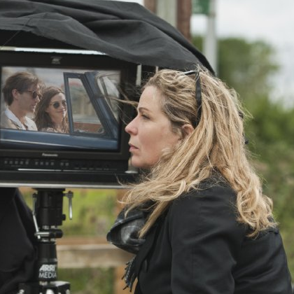

Introduction
1988年7月15日。
真面目な優等生エマと自由奔放な遊び人デクスター。
大学の卒業式で初めて言葉を交わし、互いに惹かれ合うものを感じて一夜を共にする。
しかし２人は一線を越えぬまま、友だちの関係でいることを選ぶ。
作家を夢見ながらも、なかなか思うようにいかないエマ。
一方、テレビの人気司会者となり、様々な女性と恋愛遍歴を重ねるデクスター。
毎年7月15日には直接会うか電話で話をするなど、友だち以上恋人未満の微妙な関係を続けつつも、2人はそれぞれ別々の人生を歩むが…
「幸せになるためのイタリア語講座」「１７歳の肖像」のロネ・シェルフィグ監督が、「プラダを着た悪魔」のアン・ハサウェイと「アクロス・ザ・ユニバース」のジム・スタージェスを主演に迎えて贈るロマンティック・ストーリー。
大学の卒業式で意気投合して親友となった男女の23年に渡る切ない紆余曲折の道行きを、毎年7月15日の一日を切り取り描き出していく。
Cast&Staff
アン・ハサウェイ [エマ役]
出身はニューヨーク。
ティーンのころから演技、歌、ダンスに才能を発揮し、17歳でＴＶシリーズの「ゲット・リアル」（99）に出演。
２年後に、ゲイリー・マーシャル監督の『プリティ・プリンセス』（01）でヒロインの座を射止め、華麗に映画デビューを飾った。
内気で冴えない女子高生が、突然プリンセスに指名され、美しく変身を遂げていく過程をチャーミングに演じたハサウェイは、たちまち幅広い人気を獲得。
その他の出演作は、『プラダを着た悪魔』（06）、『アリス・イン・ワンダーランド』（10）、『ダークナイト ライジング』（12）、『レ・ミゼラブル』（12）など。
ジム・スタージェス [デクスター役]
1978年にロンドンで生まれ、サリー州で育つ。
1993年から1995年まではナショナル・ユース・シアターに在籍し、1994年に映画デビュー。
ソルフォード大学では映画製作と演技を学んだ。
2007年公開の『アクロス・ザ・ユニバース』や翌年公開の『ラスベガスをぶっつぶせ』で注目を集める。
09年、エンパイア映画賞の最優秀新人賞部門にノミネートされた。
近作の『クラウド・アトラス』では１人６役を演じ分けている。

ロネ・シェルフィグ [監督]
デンマーク出身の女性映画監督。
叔父は作家のHans Scherfig。
デンマークの映画学校を卒業し、1990年に初監督作品を発表。
2000年に監督したドグマ映画『幸せになるためのイタリア語講座』がベルリン国際映画祭銀熊賞を受賞し、世界的にヒット。
2009年、イギリス映画『17歳の肖像』の監督を務め、この作品でサンダンス映画祭の観客賞を受賞した。

{kind=link}
{kind=link}
{kind=link}
{kind=link}
{kind=link}
{kind=link}
{kind=link}
{kind=link}